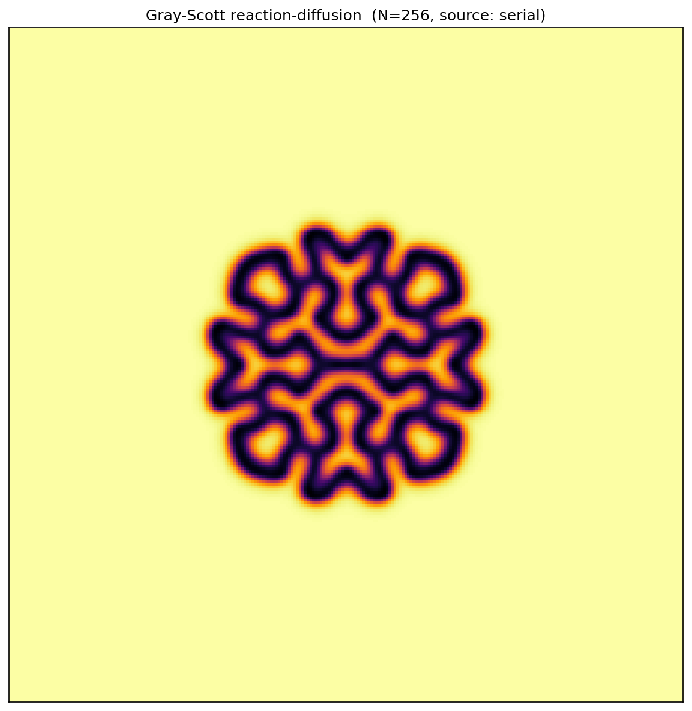
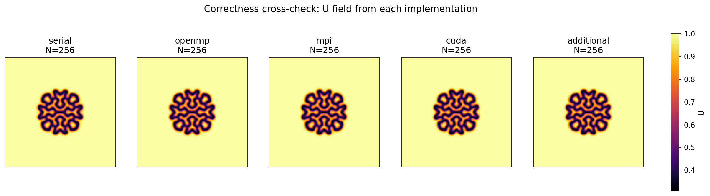
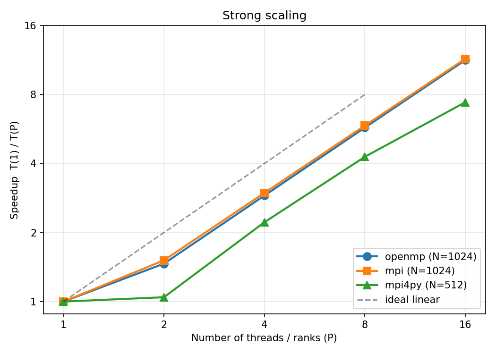
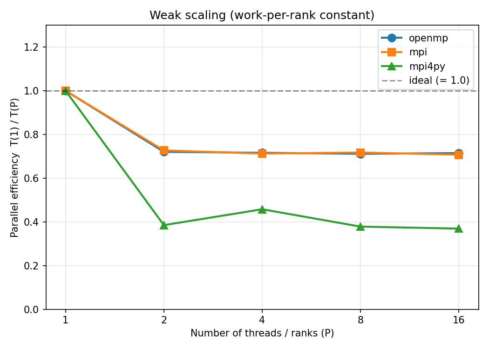
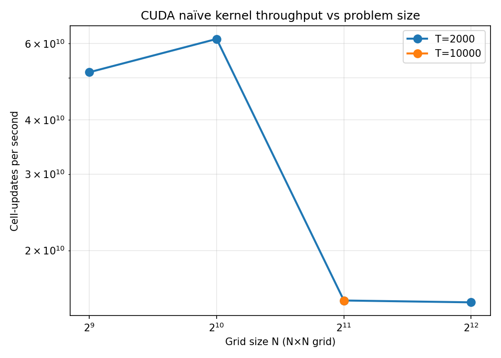
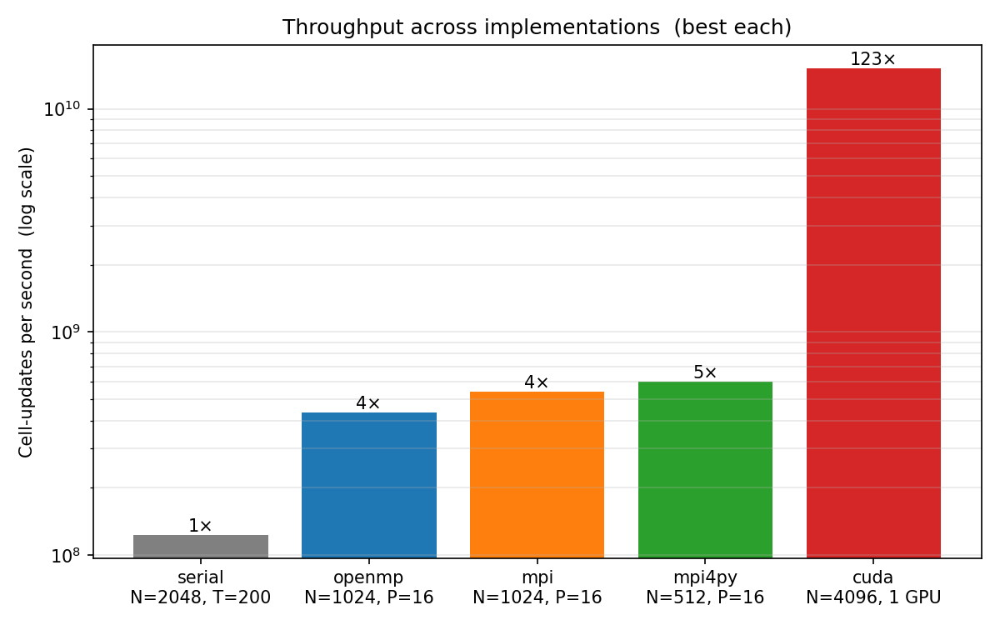

CS 2050 Final Project — Tian Xia — May 2026

The picture above is the steady-state output of a two-equation system called the Gray-Scott reaction-diffusion model. Two chemical species U and V diffuse around a 2D grid; meanwhile V consumes U to produce more V, and V also decays at a fixed rate. From those simple rules plus a tiny initial seed, you get patterns that look uncannily biological — spots, stripes, mazes, or coral, depending on the feed rate F and kill rate k. They’re examples of the morphogenesis patterns Alan Turing predicted in his 1952 paper.
I picked Gray-Scott because it hits a sweet spot for parallel computing. The kernel is a 5-point stencil — every cell only looks at its four neighbors — so parallelization is clean across OpenMP, MPI, CUDA, and NumPy. The dynamics are deterministic given the same initial state, so I can compare implementations byte-for-byte. And when I get something wrong, the picture comes out broken in a visually obvious way.
This report covers five implementations — serial C++, OpenMP, MPI,
CUDA, and mpi4py — sharing the same algorithm, parameters,
and per-cell initial noise. The hero image is the serial U field at
N=256, T=5000, in the “coral” regime (F = 0.060, k = 0.062). All numbers
come from the CS-2050 Slurm cluster: Intel Xeon Cascadelake CPU nodes
and NVIDIA L4 GPU nodes.
The Gray-Scott PDEs are:
∂U/∂t = D_u · ∇²U - U·V² + F·(1 - U)
∂V/∂t = D_v · ∇²V + U·V² - (F + k)·VI solve them on a uniform N × N grid with periodic boundary conditions, forward Euler in time, standard 5-point Laplacian in space, with Δx = Δt = 1. Constants throughout: D_u = 0.16, D_v = 0.08, F = 0.060, k = 0.062. Storage is float32.
Forward Euler is conditionally stable; the relevant ratio D_u · Δt / Δx² = 0.16 is comfortably under the standard 0.25 limit. The initial condition is U = 1 everywhere except a 20×20 central square where U = 0.5, and V = 0 everywhere except the same square where V = 0.25, plus deterministic noise of magnitude 0.005 per cell to break symmetry. The noise comes from a hand-rolled MT19937 with seed 42, byte-identical between C++ and Python (§3.5).
I run a fixed number of time-steps and never check for convergence — convergence-based stopping criteria add timing variance I don’t want when benchmarking.
All five implementations share the same building blocks: two buffers
per field with ping-pong each step; a portable MT19937 noise generator
(raw integer output divided by 2^24, scaled to ±0.005 — I avoid
std::uniform_real_distribution because it differs across
libc++ and libstdc++); the binary I/O format
[int32 N][float U[N²]][float V[N²]]; and a CSV row tag
CSV,impl,N,T,P,trial,seconds,ups for grep-friendly slurm
logs.
Cross-implementation correctness is enforced by a
--check <ref_path> flag on every non-serial binary:
it runs the canonical N=128, T=1000 problem, compares its output to the
serial reference file, and prints OK or FAIL.
The serial binary writes the reference with
--write-reference. This gate runs inside every
submit.slurm.
| Implementation | LOC | Build |
|---|---|---|
serial/src/grayscott_serial.cpp |
189 | CMake, g++ -O3 -march=native |
openmp/src/grayscott_openmp.cpp |
176 | CMake, g++ -O3 -march=native -fopenmp |
mpi/src/grayscott_mpi.cpp |
278 | direct mpic++ -O3 -march=native |
cuda/src/grayscott_cuda.cu |
215 | direct nvcc -O3 |
additional/src/grayscott_mpi4py.py |
267 | none (Python) |
The serial code is the reference and the baseline against which every
other implementation’s speedup is measured. The inner loop is a textbook
5-point stencil with periodic neighbors written as
(j-1+N)%N and (j+1)%N. Buffers ping-pong with
std::swap after each step. Timing wraps only the time-step
loop (allocation, init, and file I/O are excluded) using
std::chrono::steady_clock.
OpenMP differs from serial by exactly one line:
#pragma omp parallel for collapse(2) schedule(static) over
the inner (i, j) loop. collapse(2) flattens
the two nested loops so the runtime has more chunks to hand out;
schedule(static) is correct because every cell does
identical work, so there is no load imbalance to schedule around
dynamically. Performance is evaluated across thread counts P ∈ {1, 2, 4,
8, 16} on one exclusive node — see §4.2 for the strong-scaling
curve.
I use 1D row decomposition: rank r owns
local_rows = N/P consecutive rows in a
(local_rows + 2) × N array, where the two extra rows are
halos owned by neighbor ranks. Each step does (1) halo exchange — two
MPI_Sendrecv per field with up = (rank-1+P)%P
and down = (rank+1)%P, so 4 Sendrecv per step
total; the +P)%P makes the topology periodic. (2) Stencil
sweep on rows 1..local_rows using the just-exchanged halos
for top/bottom. (3) Local left/right wrap — every rank still owns the
full N columns, so the periodic wrap on the column axis is computed
locally with (j±1+N)%N, not via MPI. This is an easy spot
for a subtle bug, so I tested it explicitly: --check at P =
1 exercises only the left/right wrap (no halo exchange happens), and
--check at P ≥ 2 exercises both.
Communication strategy choices. I picked 1D row
decomposition over 2D because for a 5-point stencil 1D has two face
neighbors per rank instead of four (no diagonals are needed), halving
the per-step Sendrecv count and simplifying the
periodic-wrap bookkeeping; for the rank counts (≤ 16) and grid sizes (N
≤ 1024) here, 2D’s better surface-to-volume ratio doesn’t pay off yet. I
picked blocking MPI_Sendrecv over
Isend/Irecv + Wait because compute-per-step is small
relative to inter-rank latency, so the overlap window is too short to
recover the extra code complexity — a choice validated by the very flat
weak-scaling curve in §4.3.
CUDA launches one thread per cell from a 16×16 thread block. The
kernel is a naïve global-memory stencil — no shared-memory tiling.
Periodic BC uses the same modulo arithmetic as the CPU code. Two device
buffer pairs are allocated once; the time loop launches the kernel T
times and ping-pongs device pointers (no host-device transfers in the
timed loop). Timing uses
cudaEventRecord/cudaEventElapsedTime so I
measure kernel time only; a warm-up launch absorbs driver/JIT
overhead.
The mpi4py code mirrors the C++ MPI structure exactly: same row
decomposition, same blocking comm.Sendrecv halo exchange,
same local left/right wrap. The stencil is one vectorized NumPy
expression using np.roll(axis=1) for the wrap. The halo
exchange uses capitalized comm.Sendrecv
(buffer-protocol API), not the lowercase sendrecv, because
the lowercase version pickles the array and is ~100× slower — a real
performance pitfall in mpi4py.
The trickier piece is the noise. NumPy’s
np.random.MT19937(42) does not match C++’s
std::mt19937(42) — NumPy uses a SeedSequence,
C++ initializes from the seed directly. To get byte-equivalent initial
conditions, I reimplemented MT19937 in 24 lines of Python that match the
C++ recurrence; the first 8 raw outputs match digit-for-digit. A
--trials N flag runs the timed loop N times in one Python
process, amortizing the ~30-second Python+NumPy+mpi4py startup over
multiple data points.
Comparing mpi4py to the C++ MPI version directly: on performance,
mpi4py reaches 6.0 × 10⁸ cell-updates/s at P = 16 (N=512), in the same
range as C++ MPI’s 5.4 × 10⁸ at the same P (N=1024). On ease of
development, the LOC counts are very close (mpi4py 267, C++ MPI 278) —
the explicit MT19937 reimplementation in Python eats most of what NumPy
saves on the stencil — but the iteration loop is much faster in Python
(no recompile) and the mental model is identical. On abstraction level,
NumPy’s slicing and np.roll lift the stencil from
cell-by-cell loops to whole-grid expressions, but the MPI calls stay at
the same level (explicit ranks, explicit Sendrecv) — so the
abstraction win is local to the stencil, not the communication.
All five implementations pass --check against the
canonical N=128, T=1000 serial reference:
| Implementation | max abs err (U) | max abs err (V) |
|---|---|---|
| serial (self-check) | 0.000e+00 | 0.000e+00 |
| openmp (16 threads) | 0.000e+00 | 0.000e+00 |
| mpi (4 ranks) | 0.000e+00 | 0.000e+00 |
| cuda (1 GPU) | 1.192e-06 | 1.013e-06 |
| mpi4py (4 ranks) | 7.749e-07 | 7.153e-07 |
OpenMP and MPI are independent parallel implementations (shared-memory threads vs distributed-memory ranks), but both produce numerical output identical to serial down to the bit. That’s because Gray-Scott has no reductions in the time-step — every cell update is element-wise — so different parallelization strategies don’t reorder any FP operation. CUDA and mpi4py drift by ~1e-6 (well under my 1e-5 tolerance) from small differences in float reduction order inside the GPU’s register file or NumPy’s vectorized add.
Figure 1 shows the U field from each implementation after the demo run (N=256, T=5000) — all five panels are visually indistinguishable.

Figure 2 shows speedup T(1)/T(P) vs the number of
threads or ranks P. All three CPU implementations are
evaluated at P ∈ {1, 2, 4, 8, 16}: OpenMP on one exclusive node at N =
1024, MPI at N = 1024, and mpi4py at N = 512, with MPI and mpi4py using
OpenMPI’s shared-memory transport for the halo exchange.

OpenMP gets an 11.3× speedup at 16 threads (71% efficiency). MPI gets 11.45× at 16 ranks (72%) — essentially identical to OpenMP at the same node, even though one is shared-memory threads and the other is distributed-memory ranks. mpi4py gets 7.4× at 16 ranks (46%). 71% efficiency is respectable for a memory-touching stencil kernel. The mpi4py drop comes from per-step Python overhead being a bigger fraction of work as P grows.
Figure 3 shows parallel efficiency for a weak sweep where work per
rank is held constant by scaling the problem size with
N(P) = ⌊512·√P⌋ for OpenMP and MPI, and
⌊256·√P⌋ for mpi4py. Perfect weak scaling would be a flat
line at 1.0.

OpenMP and MPI behave nearly identically: a single drop at P = 1 → 2 (~73% MPI, ~72% OpenMP), then flat from there on (still ~71% at P = 16 for both). The drop is the one-time cost of switching from a serial code path to multi-rank coordination. The flat plateau is not because surface-to-volume is constant — with 1D row decomp and N(P) = ⌊512·√P⌋, per-rank halo grows like O(√P) while per-rank compute stays constant, so the ratio actually creeps up. The reason the curve looks flat is that at our rank counts the absolute communication cost stays small compared to the per-step compute. At much larger P this plateau would eventually bend down. mpi4py drops more sharply (~37% at P = 16) because Python’s per-step overhead grows with rank count.
CUDA runs on a single L4 GPU, so the strong-scaling sweep above
doesn’t apply — there’s only one device. To characterize the GPU
implementation I vary the problem size instead, sweeping
N ∈ {512, 1024, 2048, 4096} at T = 2000.

Throughput is high at small N (5.2 × 10¹⁰ ups at N=512, peaking at
6.2 × 10¹⁰ at N=1024) and drops sharply to a plateau near 1.5 × 10¹⁰ ups
for N ≥ 2048. The high small-N regime is the cache story:
at small N the grid fits in the GPU’s L1/L2 with near-perfect cache
reuse for neighbor reads. At large N the neighbors increasingly come
from DRAM, and HBM bandwidth becomes the bottleneck.
Figure 5 shows the best throughput each implementation achieves on a log scale.

Serial peaks at 1.23 × 10⁸ ups (N = 2048, T = 200). The CPU-parallel implementations cluster at 4–6 × 10⁸ ups at P = 16: OpenMP at 4.4 × 10⁸ (N=1024), MPI at 5.4 × 10⁸ (N=1024), and mpi4py at 6.0 × 10⁸ (N=512). Notably mpi4py matches the C++ MPI throughput — NumPy’s vectorized stencil is genuinely competitive at small problem sizes. CUDA dwarfs everything: 1.52 × 10¹⁰ ups at N = 4096 on a single L4 GPU — 123× the serial baseline in the DRAM-bound regime, and 6.2 × 10¹⁰ at N = 1024 in the cache-fed regime.
I ran Intel VTune’s hpc-performance analysis on the
OpenMP binary at N = 1024, T = 5000, 16 threads on the Cascadelake
compute node. Going in, my expectation was that Gray-Scott would be
memory-bound: each cell-update is ≈ 12 reads + 2 writes = 56 bytes for ≈
28 floating-point ops, so algorithmic intensity is ≈ 0.5 FLOP/byte, well
below the ~1 FLOP/byte threshold where modern CPUs become DRAM-limited.
What VTune actually said:
| VTune metric | Value |
|---|---|
| Elapsed Time | 49.35 s |
| SP GFLOPS achieved | 2.48 |
| Memory Bound | 3.7% of pipeline slots — NOT memory-bound |
| DRAM Bound | 0.0% of clockticks |
| Vectorization (Packed FP) | 0.0% — NO SIMD vectorization |
| SP FLOPs (Scalar) | 100.0% |
| CPI Rate | 16.4 (very high) |
| Effective Physical Core Util | 62.3% (≈15 of 24 cores) |
| Top hotspot | step kernel, 736 s CPU time |
The two numbers that jump out are 0% packed FP and
CPI = 16.4. Despite -O3 -march=native, GCC
didn’t auto-vectorize the stencil loop — every floating-point op is
scalar. The likely culprit is the periodic-BC modulo arithmetic
((j-1+N) % N, (j+1) % N): it creates index
expressions the auto-vectorizer can’t safely widen to a SIMD lane, and
the integer modulo itself is long-latency (20–40 cycles on Cascadelake).
Together that explains both the missing vectorization and the high CPI.
Memory bandwidth is essentially untouched because the loop produces
results so slowly that DRAM is never close to saturated.
The kernel is achieving 2.48 GFLOPS at 16 threads. Cascadelake’s 16-core AVX-512 peak is around 800 GFLOPS, so we’re at about 0.3% of peak compute — an order of magnitude below the memory-bound roofline ceiling. To approach that ceiling, the implementation would need separate interior and boundary loops so the modulo only appears on the rim; the bulk loop would then auto-vectorize and pick up ~16× from AVX-512, after which DRAM bandwidth becomes the next bottleneck.
For the GPU, with 28 FLOPs per cell-update and 1.52 × 10¹⁰ ups at N = 4096, the kernel hits ~430 SP GFLOPS — about 1.8% of the L4’s 24 SP TFLOP peak. Counting every neighbor read at face value (56 bytes/cell), the logical memory load bandwidth is 56 B × 1.52 × 10¹⁰ ≈ 850 GB/s, well above the L4’s 300 GB/s HBM peak — which is only possible because L1/L2 catch most of the redundant neighbor reads, so actual DRAM traffic is much less than the logical figure. The plateau in Figure 4 is the regime where this cache mediation tops out: at large N the working set spills past cache, more reads fall through to HBM, and DRAM bandwidth becomes the binding ceiling.
Two patterns from the data deserve a closer look.
OpenMP and MPI converge on shared memory. At P = 16 my single-node MPI benchmark hits 11.45× speedup vs OpenMP’s 11.30× — essentially equal, even though one is shared-memory threads and the other is distributed-memory ranks. The intuition that “MPI is heavier than OpenMP” is more about communication topology than fundamentals: in the single-node case, OpenMPI uses shared-memory transport so both implementations end up touching the same memory pages. The interesting follow-up question is multi-node, where MPI’s halo-exchange latency becomes a real cost OpenMP doesn’t pay.
Productivity vs performance is not as sharp a tradeoff as I expected. mpi4py with NumPy slice arithmetic stays competitive with C++ MPI through P = 16 (within ~10% throughput at the same rank count). The LOC counts are essentially the same (267 vs 278), but the Python iteration loop is much faster — no recompile — so for stencil-style code on shared memory you can get most of C++’s performance with a faster development cycle. The break-even is reached when per-step Python dispatch stops being negligible — i.e., very small problems or very high rank counts.
Five implementations of Gray-Scott produce visually identical patterns spanning 1.23 × 10⁸ cell-updates/s on a single Cascadelake core to 1.5 × 10¹⁰ on one L4 GPU in the DRAM-bound regime (and over 6 × 10¹⁰ when the grid fits in GPU caches). The three CPU-parallel implementations land in a tight band at P = 16 — OpenMP and MPI both at ~11.4× speedup with 71–72% efficiency, mpi4py at 7.4× with 46% — and behave identically on shared memory once you account for the OpenMPI shared-memory transport. The biggest finding from VTune profiling is that the OpenMP implementation runs at 0.3% of the CPU’s vector peak because the periodic boundary’s modulo arithmetic prevented auto-vectorization. The bottleneck is scalar arithmetic and a very high CPI, not memory bandwidth — opposite of the textbook “low-arithmetic-intensity stencil is memory-bound” expectation. Restructuring the boundary handling is the obvious next step; multi-GPU CUDA, 3-D Gray-Scott, and adaptive mesh refinement live further out on the same continuum.